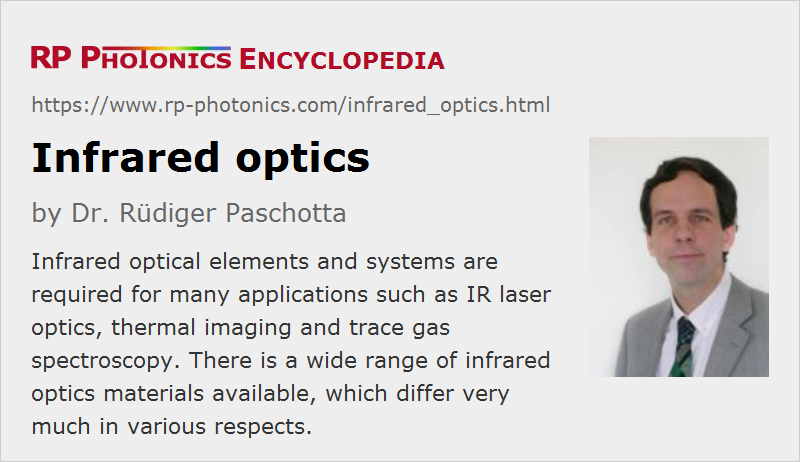

Infrared Optics
Acronym: IR optics
Definition: optical elements and systems which are suitable for infrared light
German: Infrarot-Optik
Categories: general optics, optical materials
How to cite the article; suggest additional literature
Author: Dr. Rüdiger Paschotta
Many optical elements and systems need to work with infrared light – sometimes in addition to visible light, but often in the infrared spectrum region only. Some are made as laser line optics for specific wavelengths, while others work in wide wavelength ranges. Particularly for components operated at relatively long wavelengths (mid and far infrared), the term infrared optics is common. Even longer wavelength regions e.g. for terahertz radiation are usually considered to be outside the area of infrared optics.
Infrared optics are required for certain lasers emitting at long wavelengths – for example CO2 lasers working at 10.6 μm. Due to the high power levels, it is essential to reach very low absorption losses of laser optics. Similarly, many optical parametric oscillators and amplifiers emit light at long wavelengths, and this often in relatively broad wavelength regions, so that broadband infrared optics are required.
Infrared imaging and vision applications also rely on infrared optics. Infrared viewers often work only in the near-IR region, while thermography (thermal imaging) needs to be done at rather long wavelengths, unless the temperatures of the observed objects are high. Examples for applications areas are security imaging, machine vision and defense (e.g. guided missiles).
Another important field of application is spectroscopy, because many interesting transitions e.g. for identifying trace gases are in the infrared (often in the mid-IR).
Frequently used infrared optical elements include lenses (also achromatic ones), mirrors, beam splitters, prisms, optical filters, optical windows and polarizers. Those may be supplied separately or as parts of more complex optical assemblies.
Transparency in the Infrared
An essential condition for optical elements to work with infrared light is that transparency (i.e., propagation with low absorption and scattering losses) is obtained for optical materials – particularly for elements like lenses and prisms, where propagation lengths can be significant, but often also for dielectric coatings.
Many optical materials which are transparent in the visible optical range also exhibit good transparency in the near infrared, but not for longer wavelengths (mid and far infrared). For example, fused silica exhibits rapidly increasing absorption losses from about 2 μm on.
Such behavior with a relatively sharp infrared absorption edge is typical; it results from multiphonon absorption. This process sets in where the photon energy is only a small multiple of the maximum phonon energy, so that the energy of a photon can be converted to that of a few phonons. For shorter optical wavelengths (higher photon energies), such processes have higher orders (i.e., involve more phonons) and rapidly become very weak. Equally, it helps if the material is chosen such that it has low phonon energies, i.e., relatively slow vibrations of its lattice. Typically, that is the case for materials with relatively heavy constituents. At the same time, such materials often exhibit a small band gap energy, which results in strong absorption for shorter wavelengths: both edges of the transparency range are shifted towards longer wavelengths. As a result, such materials often exhibit strong absorption in the visible spectral region. Some of them look yellow or orange due to absorption only in the blue region, while others are even completely opaque.
Materials for Infrared Optics
Infrared materials can be (mono)crystalline, glasses, semiconductors or metals. Some typical materials used for infrared optics are described in the following:
- Fused silica (SiO2) is an excellent optical material, but usable only up to roughly 2 μm wavelength. Crystalline quartz (also SiO2) is similar. Some other materials, which are common for optics indivisible spectral range, are also suitable for the near infrared – for example, glasses like BK7 (a borosilicate crown glass).
- Sapphire is one of the hardest and most durable optical materials (but difficult to process) and is transparent from the UV up to about 6 μm. It also exhibits an excellent thermal conductivity.
- Various fluorides such as calcium fluoride (CaF2), barium fluoride (BaF2), magnesium fluoride (MgF2) and lithium fluoride (LiF) are quite common as crystalline materials and partly also for dielectric coatings. For example, MgF2 is often used for anti-reflection coatings. Fluorides generally offer a wide transparency range from the near ultraviolet to the mid infrared. There are also fluoride glasses, e.g. fluorozirconate, fluoroaluminate and fluoroindate glasses.
- Quite wide transparency ranges are also obtained with some selenides like zinc selenide (ZnSe) and zinc sulfide (ZnS); these robust materials are often applied for CO2 laser optics. They are also available as rare-earth-doped gain media, particularly with chromium doping. There are also tellurides, particularly cadmium telluride (CdTe) for use at 12 μm to 25 μm.
- Cesium bromide (CsBr) and cesium iodide (CsI) are also suitable for application at very long wavelengths (the latter even up to about 40 μm). Potassium chloride (KCl) has a particularly broad usable wavelength range from the UV to the mid infrared (about 0.3 μm to 21 μm). Sodium chloride (NaCl) is more durable but very fragile. Such ionic substances are soluble in water and strongly hygroscopic.
- Further, there are some chalcogenide glasses containing substances like sulfur, selenium, arsenic, germanium and silver. They are typically sold under certain trade names, not specifying the exact chemical composition. Such glasses can be used in glass molding processes.
- Semiconductors like silicon, germanium and gallium arsenide, which are completely opaque in the visible region, exhibit good infrared transparency. They have rather high refractive indexs.
- Various metals can be used for reflecting coatings of infrared mirrors, namely copper, aluminum, silver, gold and stainless steel, as well as various metal alloys such as chrome–nickel. They are normally made as first surface mirrors.
It is important to have a wide range of such materials, since various properties need to be considered for applications:
- Beginning with the most essential optical properties, the transmission wavelength bands are quite different, often excluding a whole range of materials for a certain application. The materials also have very different values of refractive index and chromatic dispersion. Many infrared materials exhibit quite strong optical nonlinearities.
- The possibility of getting of broadband anti-reflection coatings depends on refractive indices and the availability of suitable coating materials.
- Some materials have very high thermal expansion coefficients and thermo-optic coefficients (e.g. dn/dT), which in combination with residual absorption can lead to strong thermo-optic effects such as thermal lensing.
- There are big differences concerning mechanical robustness: some products are extremely fragile or quite soft, while others are robust and durable. Different optical fabrication techniques are required for cutting and surface finishing, and the results in terms of practically achievable surface quality (e.g. scratch–dig specifications) also differ significantly.
- Some materials are quite hygroscopic and can thus be used only in humidity-free environments.
- Some infrared materials (often those for the longest wavelengths) contain highly toxic substances such as thallium and cadmium, which is also a problem in the context of ROHS conformity, while others are not creating any environmental hazards.
Note that there are not only infrared bulk optics, but also mid-infrared fibers, e.g. fluoride fibers.
Scattering
Naturally, scattering processes are relatively weak at long optical wavelengths. For example, the intensity of Rayleigh scattering – scattering at objects which are far smaller than the wavelength – scales with the inverse fourth power of the wavelength. Therefore, scattering losses are usually not a serious concern for infrared optics – very much in contrast to ultraviolet optics – although the homogeneity of infrared materials is often not perfect.
Suppliers
The RP Photonics Buyer's Guide contains 112 suppliers for infrared optics. Among them:
Questions and Comments from Users
Here you can submit questions and comments. As far as they get accepted by the author, they will appear above this paragraph together with the author’s answer. The author will decide on acceptance based on certain criteria. Essentially, the issue must be of sufficiently broad interest.
Please do not enter personal data here; we would otherwise delete it soon. (See also our privacy declaration.) If you wish to receive personal feedback or consultancy from the author, please contact him e.g. via e-mail.
By submitting the information, you give your consent to the potential publication of your inputs on our website according to our rules. (If you later retract your consent, we will delete those inputs.) As your inputs are first reviewed by the author, they may be published with some delay.
See also: infrared light, multiphonon absorption, lenses, mirrors, prisms, mid-infrared fibers, optical materials
and other articles in the categories general optics, optical materials
|  |
If you like this page, please share the link with your friends and colleagues, e.g. via social media:
These sharing buttons are implemented in a privacy-friendly way!